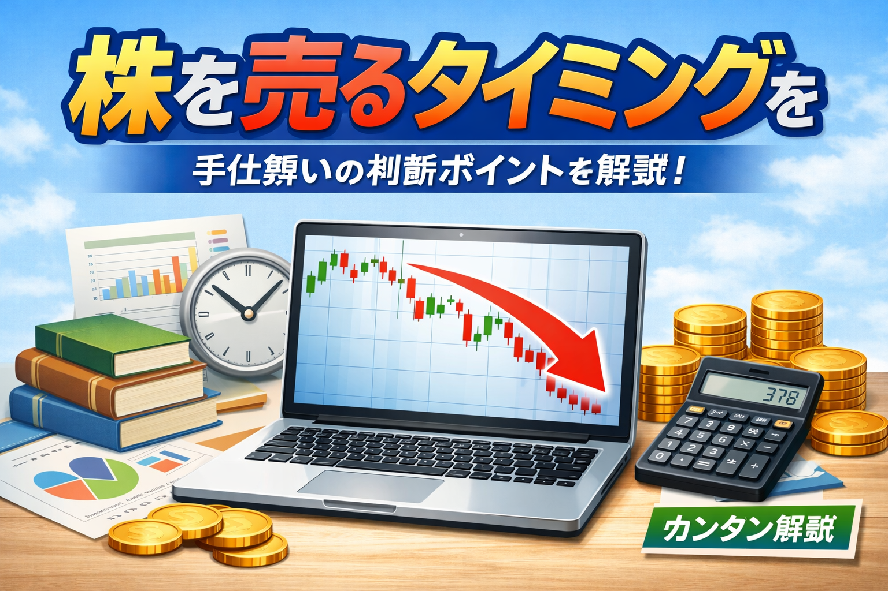

株はいつ売ればいい？利益確定と損切りの判断基準を解説
株はいつ売ればいい？最初に結論をやさしく整理

- 株を売るタイミングにも絶対の正解はありません
- 初心者は上がったら売る、下がったら我慢するだけでは判断しにくいです
- 利益確定と損切りの基準を買う前から考えておくと整理しやすいです
「株って、いつ売ればいいの？」
「利益が出たら売るべきなのか、もっと持つべきなのか迷う」
「損しているときは我慢したほうがいいのか、それとも売るべきなのか分からない」
このように、株を買うタイミング以上に、売るタイミングで悩む初心者の方は多いです。
実際、株式投資では「買うこと」だけでなく「どう売るか」もとても重要です。
ただし、売る判断をその場の感情だけで決めてしまうと、早すぎる利益確定や、遅すぎる損切りにつながることがあります。
この記事では、株を売るタイミングの基本として、利益確定と損切りの考え方、初心者が迷いやすいポイント、売る前に決めておきたい判断基準までやさしく解説します。
まず押さえたいポイント
株を売るときに大切なのは、今の感情ではなく、あらかじめ考えていたルールに近づけることです。
買う前に売る基準を持っておくと、迷いを減らしやすくなります。
利益確定と損切りの違いを初心者向けに整理
- 利益確定は、含み益がある状態で利益を確定させることです
- 損切りは、損失の拡大を抑えるために売る考え方です
- どちらも「売る」行動ですが、目的が異なります
株を売る場面は、大きく分けると「利益確定」と「損切り」の2つで考えやすいです。
利益確定とは、買った価格より上がっているときに売って、利益を実際のものにすることです。
一方で損切りは、買った価格より下がっているときに売る判断です。
言葉だけを見るとつらく感じやすいですが、これ以上の損失拡大を避けるための考え方として使われることがあります。
初心者がまず理解しておきたいのは、どちらも「正しい・間違い」を一言で決めるものではなく、自分の投資方針に沿っているかで考えるものだという点です。
利益確定はいつ考える？初心者向けの基本
- 目標としていた利益に届いたときは売る理由になります
- 買った前提が変わったかどうかも大切です
- 上がっているからまだ上がるはず、と決めつけすぎないことも重要です
- 長期保有なら短期の利益だけで判断しない考え方もあります
利益確定で迷いやすいのは、「まだ上がるかもしれない」と思って売れなくなることです。
もちろん、その後さらに上がることもありますが、どこまで上がるかを正確に読むのは簡単ではありません。
そのため、初心者は買う前に「どれくらい上がったら一度見直すか」を決めておくと整理しやすいです。
たとえば、一定の利益幅に達したら一部を売る、当初の目標株価に近づいたら見直す、といった考え方があります。
また、長期保有が前提の投資なら、少し上がっただけで売る必要がない場合もあります。
何のために買ったのかを思い出し、短期目線なのか長期目線なのかを区別して考えることが大切です。
損切りはなぜ必要といわれるのか
- 損失が大きくなりすぎる前に見直すための考え方です
- 下がった理由が変わらないまま保有し続けるのは注意が必要です
- 感情だけで「そのうち戻る」と考えすぎないことも大切です
- 損切りは負けではなく、資金管理の一部として考えられることがあります
損切りが話題になりやすいのは、損失が出ている場面ほど人は判断を先送りしやすいからです。
「もう少し待てば戻るかもしれない」と思うのは自然ですが、そのまま下落が続くこともあります。
特に、買った理由が崩れているのに持ち続けると、最初の想定と違う投資になってしまうことがあります。
決算の悪化、業界環境の変化、相場全体の流れなど、なぜ下がっているのかを整理することが重要です。
損切りは初心者にとって怖く感じやすい言葉ですが、必ずしも「失敗の証明」ではありません。
むしろ、資金を守りながら次の判断につなげるための考え方として理解すると、意味が見えやすくなります。
初心者が売るタイミングを考えるときの判断基準
- 買う前に売る基準を決めておくと迷いにくいです
- 利益確定と損切りの両方をセットで考えることが大切です
- 価格だけでなく、保有理由が残っているかも確認したいです
- 自分の性格や投資スタイルに合う基準が重要です
| 判断基準 | 利益確定で見ること | 損切りで見ること | 初心者の見方 |
|---|---|---|---|
| 価格 | 目標としていた利益幅に達したか | 許容していた下落幅を超えたか | 事前に目安を決めておくと整理しやすいです |
| 理由 | 当初の狙いが一度達成されたか | 買った前提が崩れていないか | 価格だけでなく理由も大切です |
| 期間 | 想定していた保有期間に達したか | 長く持つ前提が変わっていないか | 短期か長期かで見方は変わります |
| 感情 | 欲が強くなりすぎていないか | 怖さや期待だけで先送りしていないか | 感情よりルールを優先したいです |
株を売る基準は、人によって違って当然です。
短期で値幅を狙う人と、長期で企業成長を見たい人では、利益確定や損切りの考え方も変わります。
ただし、初心者が共通して意識したいのは、「その場で考える」のではなく「事前に考えておく」ことです。
売る基準がないまま保有すると、上がっても下がっても迷いやすくなります。
基準は細かすぎなくても大丈夫です。
まずは「何％上がったら見直すか」「何％下がったら考え直すか」「買った理由が消えたら売るか」など、基本的な軸を持つところから始めると整理しやすいです。
こんな売り方は初心者が注意したい
- 少し上がっただけで慌てて利益確定するのは注意したいです
- 下がっているのに理由を見ずに放置し続けるのも慎重に考えたいです
- SNSやニュースだけで一気に判断しないことが大切です
- 感情に振られて売買を繰り返すとルールが崩れやすいです
初心者がやりやすい失敗のひとつは、少し利益が出ただけで早く売りすぎることです。
利益を失いたくない気持ちは自然ですが、それが続くと、伸ばしたい場面まで取れなくなることがあります。
逆に、損失が出ているときは売るのがつらくなり、根拠が薄いまま持ち続けてしまうこともあります。
これも感情が判断を動かしやすい典型的な場面です。
初心者が売る前に確認したいこと
- 今売る理由を自分で説明できるか
- 買う前に考えていた基準に近いか
- 企業や相場の前提が変わっているか
- 感情だけで急いで判断していないか
※株を売る判断は、正解探しよりも、自分のルールに沿っているかで見ると整理しやすくなります。
株を売るタイミングとあわせて読みたい関連記事
株をいつ売るかの考え方を理解したら、次は買うタイミングや株価が動く理由、長期投資と短期投資の違いもあわせて確認しておくと全体像がつかみやすくなります。
以下の関連記事も参考にしてみてください。
証券口座の比較を見ておきたい方へ
一般ユーザー目線の体験でおすすめの会社をご紹介

よくある質問（FAQ）

-
Q. 株は利益が出たらすぐ売るべきですか？
必ずしもすぐ売る必要はありません。どれくらいの利益を目標にしているか、今後も保有したい理由があるかによって判断は変わります。事前に売る基準を決めておくことが大切です。 -
Q. 損切りとは何ですか？
損切りとは、含み損が出ている状態で、それ以上の損失拡大を抑えるために売却する考え方です。損失を小さく抑えるための判断として使われることがあります。 -
Q. 初心者は利益確定と損切りの基準をどう決めればよいですか？
買う前に、どこまで上がったら利益確定を考えるか、どこまで下がったら見直すかをあらかじめ決めておくと整理しやすいです。感情ではなくルールで判断する意識が大切です。 -
Q. 含み損でも持ち続ければ戻ることはありますか？
戻ることもありますが、必ず戻るとは限りません。下落の理由や企業の状況が変わっている場合は、そのまま保有し続けることが適切でないケースもあります。 -
Q. ニュースが出たらすぐ売ったほうがよいですか？
ニュースは判断材料のひとつですが、それだけで慌てて売るのは注意が必要です。内容が一時的なものか、企業の前提を変えるものかを整理して考えることが大切です。
ご利用にあたっての注意事項
本記事は情報提供を目的としており、投資の勧誘を目的としたものではありません。株式・ETF・投資信託・外国証券等の取引は元本保証がなく、価格変動等により損失が生じる場合があります。利益確定や損切りの判断にはさまざまな考え方があり、銘柄や相場環境、投資目的によって見方は異なります。取引開始前に、契約締結前交付書面や商品説明書、目論見書等を必ずご確認のうえ、ご自身の判断と責任でお取引ください。
最終更新日：2026-03-25